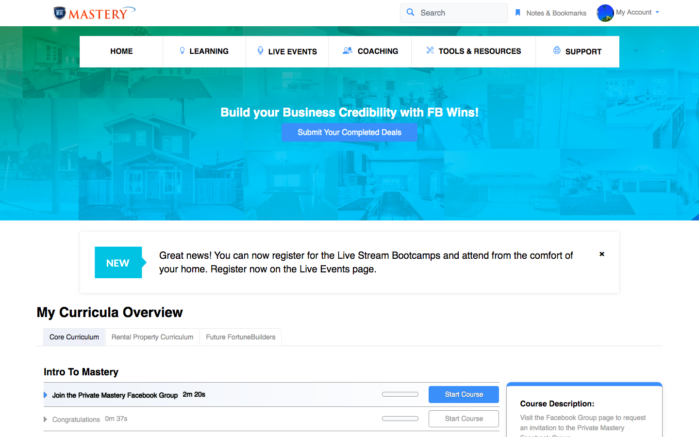
This is the student dashboard view including hero slider, any notifications, and curriuculum widget.
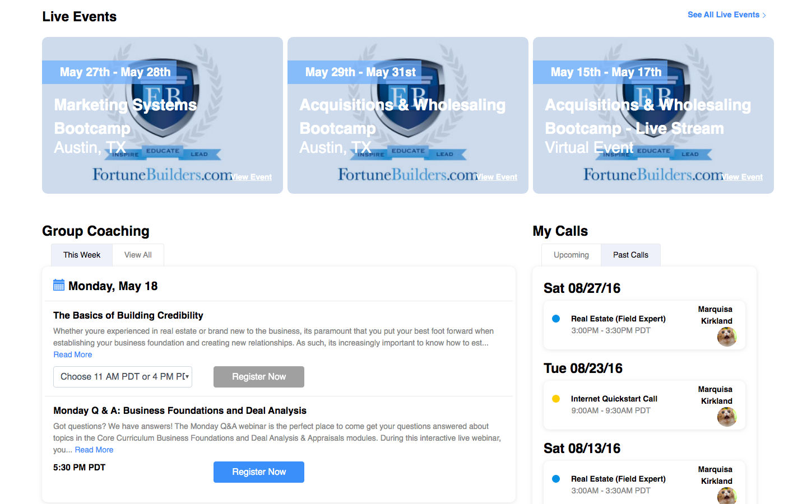
This is the student dashboard widgets including group coaching (webinars), upcoming live events, and coaching calls.
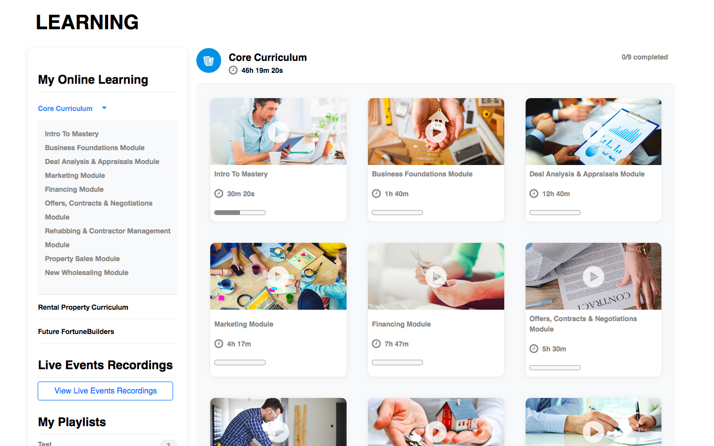
This is the curriculum view on the LMS Learning page.
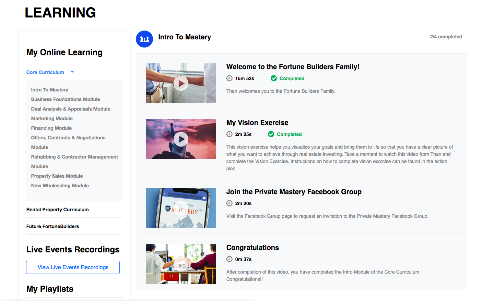
On the LMS Learning page, this is the drilled down Module view after a student selects a curriculum.
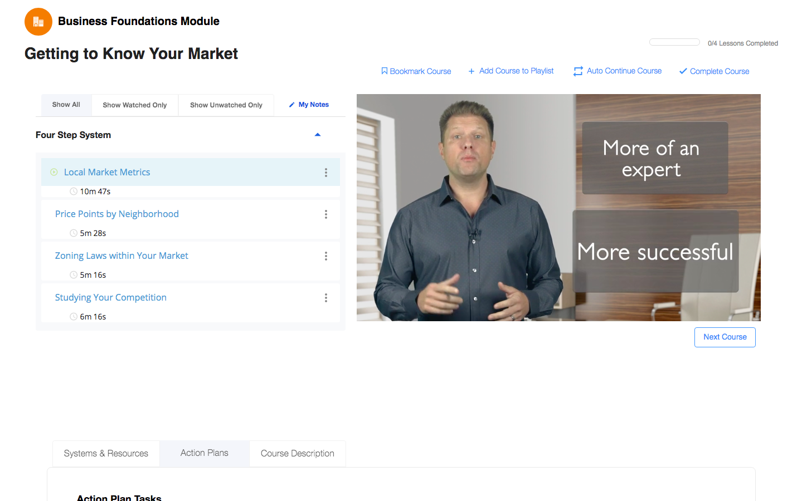
On the LMS Learning page, this is the drilled down Lesson view after a student selects a module.
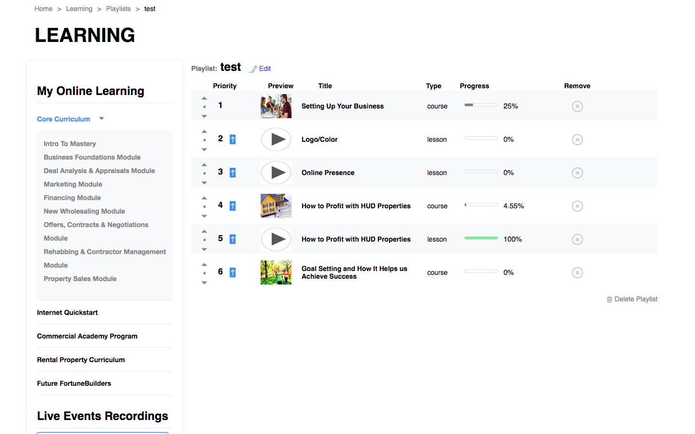
This is the Playlist view on the LMS Learning page.
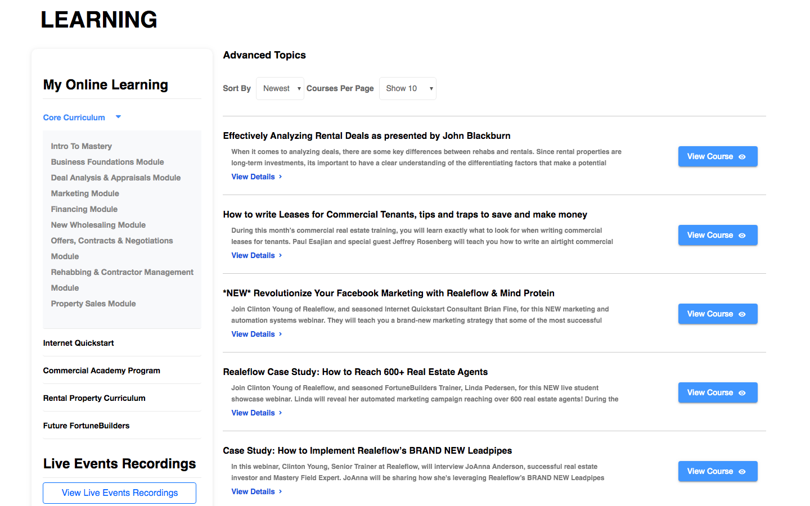
This is the Course Catalog view on the LMS Learning page.
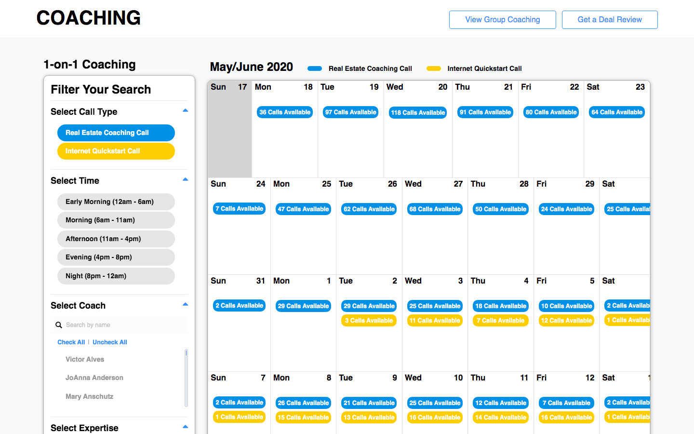
This is the student facing coaching calendar where students can book Real Estate or Internet Quickstart calls
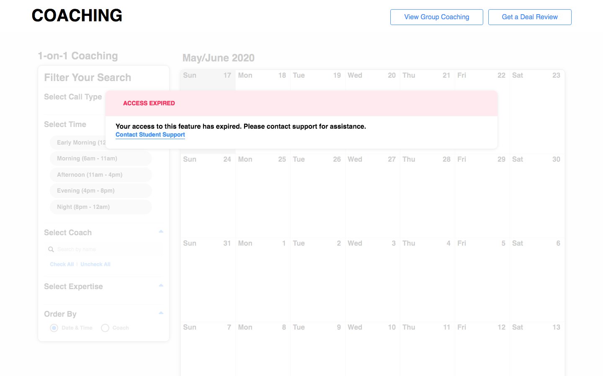
This is the student facing coaching calendar display when student call permissions have expired.
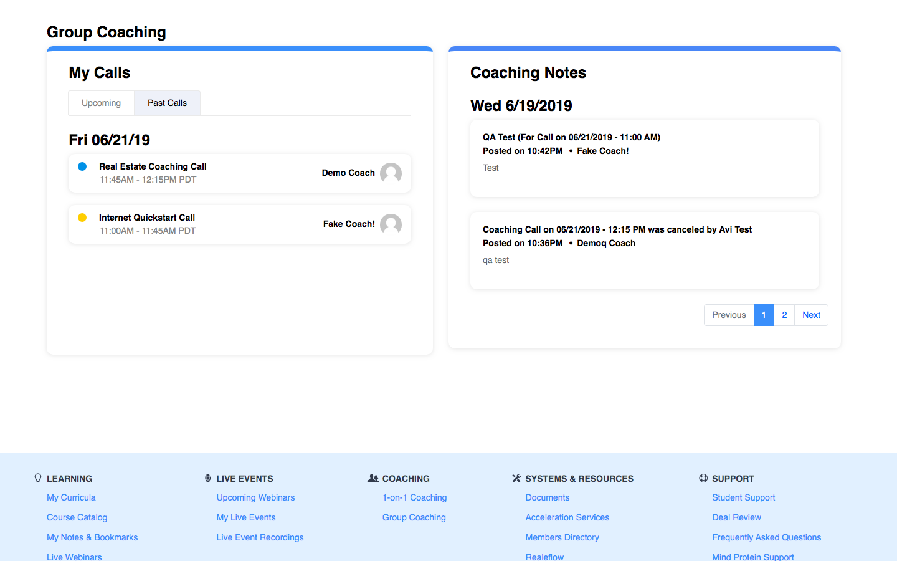
These are the coaching widgets displayed on the Coaching page.
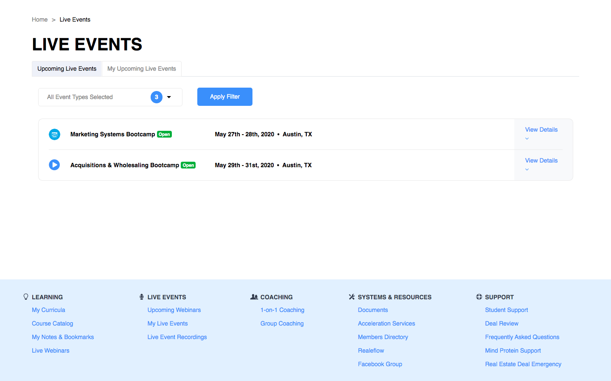
This is the Live Events page where the student can toggle between all upcoming events that they have a subscription to and their reserved upcoming events.
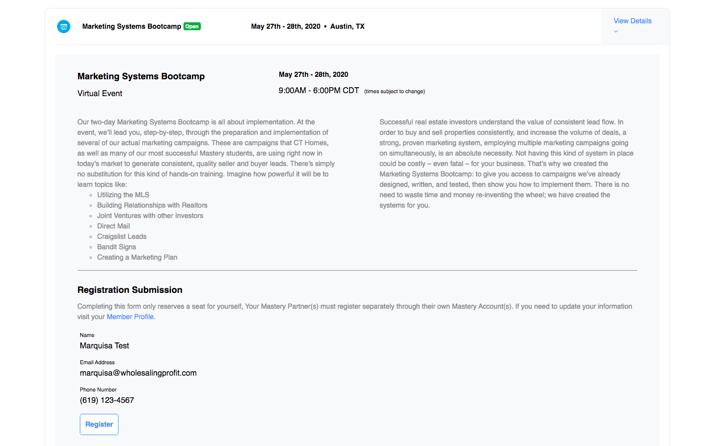
This the expanded view for a Live Event.
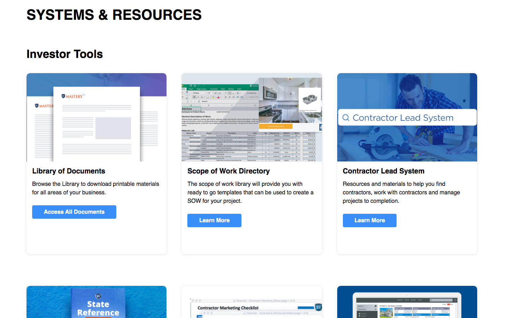
This is the resources page where students can access various wordpress widgets.
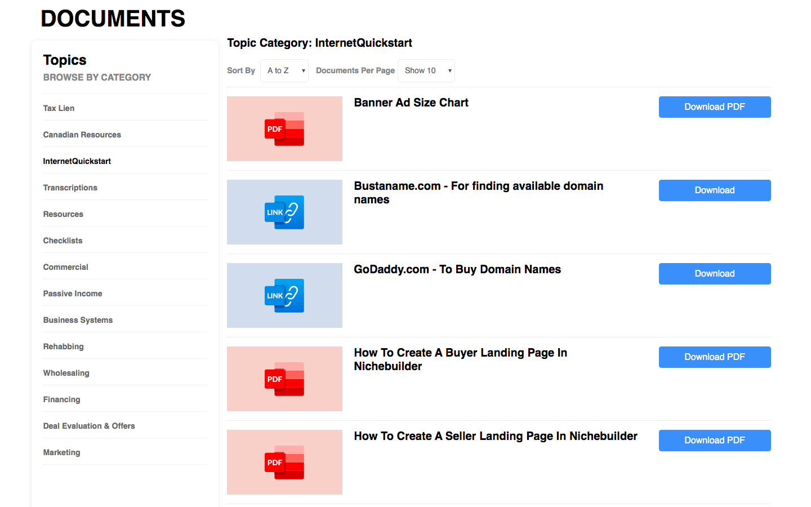
This is the documents page.

This is the notes and bookmarks page.

This is the member's profile page.
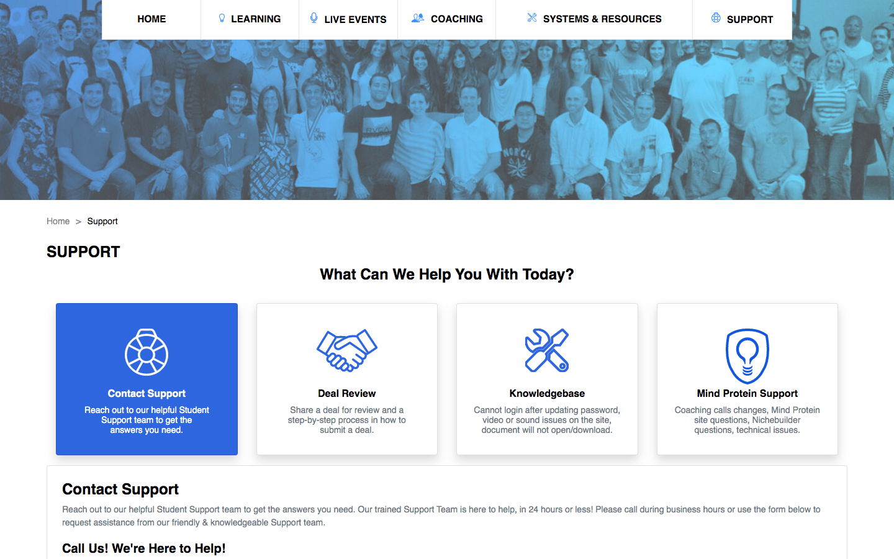
This is the support page.
Fortune Builders UI Redesign
This was the Fortunebuilders LMS Redesign that was launched in Dec 2019. The design was more streamlined with a focus on responsive design. The system was upgraded to Bootstrap 4 with a new Wordpress theme using a very modularized SASS component library.